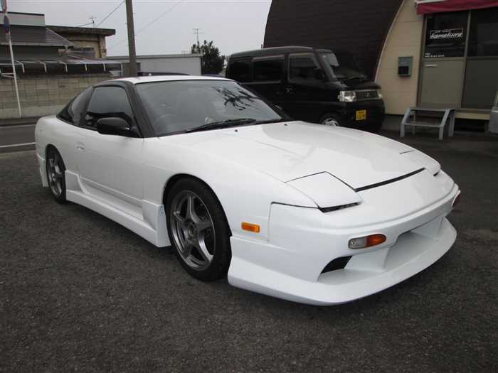
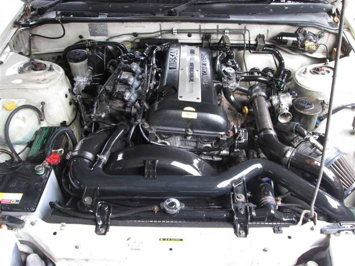

Nissan Silvia S13 180SX
Volver


Precio: $19,500,000 CLP
-Documentacion todo en regla al dia -Carrocería en estado original (no cortado ni nada raro) -A/C funcionando!!! -Catalitico sello verde -Motor SR20 Hig port "inscrito" -Llantas aro 17" -Turbo TB28 customizado (cargando presión original 0.5) -Linea de escape 2.5" -Piping inox aftermarket (no hechizo) -Filtro conico alto flujo -Big intercooler frontal Blitz -Oil cooler kit -Relocator oil filter -Bomba externa original bosch !! -Regulador de presión de combustible principal customizado -Regulador de presión de combustible secundario HPI -Big radiator full aluminio 2.5" -Frenos delanteros doble piston (nissan pathfinder) -Frenos trasero de disco originales - Relojes air/fuel y vac/boost (instalación sobria) - Strut bar delantera custom -Suspension baja dureza original - Bateria relocalizada -Neblineros aftermarket -Protector de carter custom (inox)
Comprar